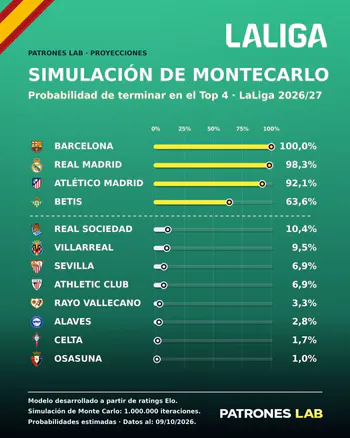
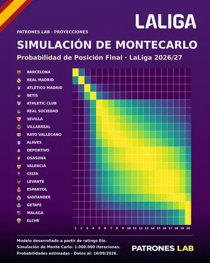
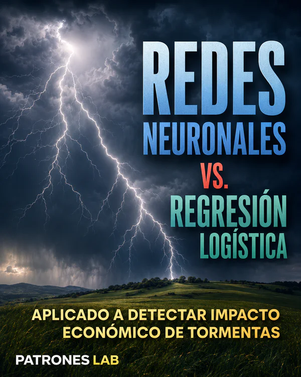

Liga Champions 2026/27 · Proyeksi poin
Proyeksi poin pada akhir fase liga dengan Poisson dan Monte Carlo, menunjukkan median dan interval persentil 25–75 dan 5–95.
Lihat posting ↗Proyeksi poin pada akhir fase liga dengan Poisson dan Monte Carlo, menunjukkan median dan interval persentil 25–75 dan 5–95.
Lihat posting ↗
Evolusi posisi akhir yang diproyeksikan hingga matchday 3 melalui sejuta simulasi dengan Poisson dan Monte Carlo.
Lihat posting ↗
Peta panas proyeksi posisi akhir untuk tim LaLiga menggunakan satu juta simulasi Monte Carlo.
Lihat posting ↗
Simulasi dengan Poisson dan Monte Carlo untuk memperkirakan probabilitas Top 8, playoff dan eliminasi di Liga Champions.
Lihat posting ↗
Perbandingan antara rating Elo, poin yang diproyeksikan, dan rentang hasil simulasi untuk masing-masing tim.
Lihat posting ↗
Histogram poin simulasi untuk mempelajari hasil kompetisi yang paling sering.
Lihat posting ↗
Perbandingan posisi akhir menggunakan persentil untuk menunjukkan rentang hasil yang paling mungkin.
Lihat posting ↗
Presentasi model Poisson dan simulasi Monte Carlo untuk memperkirakan hasil dan klasifikasi.
Lihat posting ↗
Posting LinkedIn tentang simulasi. Konten tertentu menunggu verifikasi.
Lihat posting ↗
Evolusi perkiraan posisi tim sepanjang hari kompetisi.
Lihat posting ↗
Model jumlah gol yang dicetak dengan simulasi Poisson dan Monte Carlo untuk memproyeksikan hasil Liga Champions.
Lihat proyek dalam pengembangan ↗
Perbandingan antara rating Elo dan perkiraan kemungkinan memenangkan Nations League untuk setiap tim.
Lihat posting ↗
Peluang untuk maju melalui berbagai tahapan kompetisi, dari babak penyisihan grup hingga final.
Lihat posting ↗
Presentasi model simulasi untuk menganalisis probabilitas di UEFA Nations League.
Lihat posting ↗
Analisis aktivitas udara di Kepulauan Balearic berdasarkan data publik dari AENA.
Lihat posting ↗
Simulasi probabilitas untuk memenangkan grup, mengatasi babak playoff, dan memenangkan gelar.
Lihat proyek ↗
Probabilitas posisi akhir diperbarui dengan hasil baru dan peringkat Elo.
Lihat posting ↗
Publikasi simulasi LaLiga 2026/27. Detail menunggu verifikasi.
Lihat posting ↗
Simulasi skenario untuk memperkirakan probabilitas posisi dan hasil akhir LaLiga.
Lihat proyek dalam pengembangan ↗
Publikasi skenario LaLiga 2026/27. Detail menunggu verifikasi.
Lihat posting ↗
Penerapan DBSCAN untuk mendeteksi pengelompokan dan operasi atipikal dalam data transaksional.
Lihat posting ↗
Menjelajahi perjalanan taksi di Chicago untuk mengidentifikasi pola temporal, teritorial, dan ekonomi.
Lihat posting ↗
Model klasifikasi untuk menganalisis operasi transaksional dan sinyal yang terkait dengan penipuan.
Lihat posting ↗
Presentasi Patrones Lab dan analisis datanya, model dan proyek visualisasinya.
Lihat posting ↗
Model yang membandingkan teknik klasifikasi untuk mempelajari kerusakan ekonomi akibat peristiwa meteorologi.
Lihat proyek dalam pengembangan ↗
Dasbor pengeluaran dengan pemasok untuk mengeksplorasi evolusi, kategori, dan distribusi geografis.
Lihat proyek ↗
Dasbor peringkat Spotify untuk menganalisis reproduksi, evolusi, dan distribusi berdasarkan negara.
Lihat proyek dalam pengembangan ↗
Pembaruan peluang juara setiap timnas dan kemungkinan pasangan tim di final.
Lihat unggahan ↗
Simulasi pertandingan perempat final dan peluang setiap tim untuk melaju ke babak berikutnya.
Lihat unggahan ↗
Perkiraan peluang lolos ke semifinal, bermain di final, dan menjuarai Piala Dunia.
Lihat unggahan ↗
Peluang lolos dan menjuarai turnamen diperbarui setelah babak 32 besar.
Lihat unggahan ↗
Perkiraan peluang lolos di setiap babak berdasarkan hasil yang sudah diketahui saat itu.
Lihat unggahan ↗
Model simulasi untuk memperkirakan probabilitas kemajuan dan kejuaraan untuk setiap tim.
Lihat proyek ↗
Perbandingan pemain Argentina menggunakan persentil yang dihitung berdasarkan posisi dan metrik setiap 90 menit.
Lihat posting ↗
Perbandingan visual penampilan individu di Piala Dunia Qatar menggunakan radar persentil.
Lihat proyek ↗
Analisis perubahan ancaman serangan akibat aksi pemain yang membawa bola di final Argentina–Prancis.
Lihat unggahan ↗Artikel tentang sepak bola dan probabilitas pada pertandingan Argentina-Prancis di Qatar 2022.
Baca artikel ↗
Model probabilistik untuk memperkirakan peluang setiap tembakan menjadi gol di Piala Dunia Qatar.
Lihat proyek ↗Analisis ancaman yang dihasilkan oleh aksi pemain saat menguasai bola di Piala Dunia 2022 Qatar.
Lihat proyek ↗Dasbor interaktif untuk menjelajahi permintaan dan rute naik taksi yang dilaporkan di Chicago.
Lihat posting ↗
Peta konsentrasi perjalanan di berbagai wilayah Chicago, disiapkan dengan data terbuka.
Lihat posting ↗
Analisis daerah asal dan tujuan, rute dan konsentrasi spasial taksi di Chicago.
Lihat posting ↗Peta wilayah dengan aktivitas dan arus asal serta tujuan yang lebih besar dalam perjalanan yang dilaporkan.
Lihat proyek ↗Dasbor interaktif untuk menjelajahi aktivitas, tarif, dan rute taksi di Chicago.
Lihat proyek ↗Analisis tentang bagaimana perjalanan yang dilaporkan bervariasi menurut hari, waktu, jarak, dan tarif.
Lihat posting ↗Artikel tentang jaringan perjalanan taksi perkotaan di Chicago berdasarkan data terbuka.
Baca artikel ↗Analisis permintaan, rute dan tarif perjalanan taksi dilaporkan di Chicago.
Lihat proyek ↗
Analisis harga menurut lokasi, jarak ke pusat dan karakteristik lingkungan sekitar.
Lihat proyek ↗
Model yang membedakan akomodasi relatif mahal atau murah dalam setiap tipe kamar.
Lihat proyek ↗
Perbandingan harga dan distribusi teritorial akomodasi Airbnb di London.
Lihat posting ↗Artikel tentang harga akomodasi Airbnb di London dan distribusi teritorialnya.
Baca artikel ↗Menjelajahi harga, jenis akomodasi, ketersediaan dan perbedaan antara lingkungan London.
Lihat proyek ↗Analisis penumpang, konektivitas dan musiman di bandara Kepulauan Balearic.
Lihat posting ↗Artikel tentang pariwisata di Kepulauan Balearic berdasarkan data terbuka AENA.
Baca artikel ↗Analisis lalu lintas udara di Mallorca, Ibiza dan Menorca dengan data publik dari AENA.
Lihat proyek ↗Pengelompokan kepadatan untuk mengidentifikasi transaksi atipikal dan kemungkinan pola penipuan.
Lihat proyek ↗Klasifikasi transaksi yang diawasi untuk memperkirakan risiko penipuan dan menafsirkan sinyal yang relevan.
Lihat proyek ↗
Segmentasi operasi dengan K-means untuk mengeksplorasi perilaku atipikal yang terkait dengan penipuan.
Lihat proyek ↗